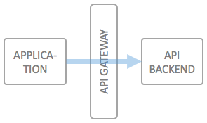

Handling machine to machine communication with wicked.haufe.io
One of the most basic use cases for an API Gateway is to enable simple machine to machine API access, including self service aspects for the developers needing access to a specific service. The special case for machine to machine communication is that usually no end user is part of the communication, or that the an end user's identity and rights have been established up front.
Typical examples of services which leverage machine to machine type communication are backend services which deliver value for other applications, such as licensing services, product management services or other types of data management systems which are either intended for pure backend purposes or for which the client applications are trusted to have already authorized an end user for using it.
These types of APIs can either be secured using
From a security perspective, the methods are more or less identical, and it's a matter of taste whether you want to leverage the very simplistic "API Keys" approach, or the standard OAuth2.0 flow, which exchanges client credentials for an access key.

A typical development time usage workflow will be like this:
At runtime, this means that the maintainer of the backend API can immediately see which applications are accessing his API, and has a means of contacting the maintainers of these applications, and/or create statistics on the usage of his API.
Please note, that this authentication and authorization method is only suitable for trusted server-side applications. The issued credentials (API Key or client id and client secret) must at all times be kept safe by the client application.
Securing APIs via API Keys or the OAuth2.0 Client Credentials Flow is both possible "out of the box" using wicked.haufe.io, no additional components are needed:
Now your developers can sign up for the API using the standard wicked.haufe.io functionality, as described in the section above on "development time" usage.
© 2016-2018 Haufe-Lexware GmbH & Co. KG, www.haufe-lexware.com, www.haufe.de, www.lexware.de, www.haufe-akademie.de